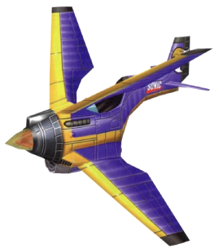

Oque é?
O Tornado é um veículo que aparece na série Sonic the Hedgehog . É o amado e confiável biplano pessoal de Sonic the Hedgehog , que ele possui pelo menos antes do incidente em West Side Island . Apesar disso, ele permite que Tails use o Tornado como seu próprio avião, devido à confiança de seu melhor amigo. Durante suas muitas aventuras juntos, Sonic e Tails usaram o Tornado como principal meio de transporte aéreo para viagens de longa distância ao redor do mundo ou voos de alta altitude. Normalmente, Tails é quem o pilota enquanto Sonic fica na asa superior, mas eventos vice-versa acontecem.
